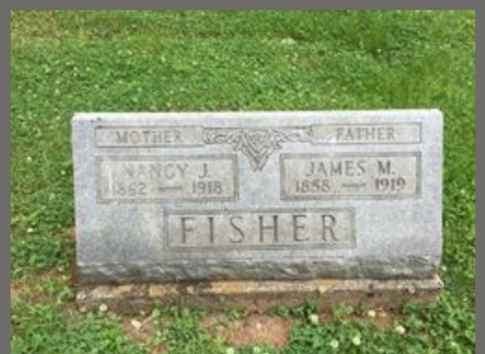

Nancy Jane Casto
about 1860 – 1918
Casto line · Jackson County, West Virginia
Quick Facts
Born
About 1860–61, Jackson County, Virginia (now West Virginia)
Died
1918, Jackson County, West Virginia
Last residence
Ripley District, Jackson County, West Virginia (1910 census)
Buried
Ephesus Baptist Church Cemetery, Fairplain, Jackson County, West Virginia
Occupation
Not recorded
Religion
Not recorded
Immediate Family
Children
- Edward O. "Eddie" Fisher (about 1879)
- Okey L. Fisher (about 26 July 1881 – 23 September 1881)
- Virdie Lee Fisher (25 February 1884 – 9 December 1963)
Siblings
- William Monroe Casto (1863–1950)
- Martha Lougenia Casto (1867–1913)
- Benjamin E. Casto (died 7 November 1868)
- Okey Johnson Casto (1870–1952)
On Family Tree Sites
Couple Folder
Life Timeline
About 1860–61 · Born in Jackson County, Virginia (now West Virginia), daughter of Joel Casto × Mary Margaret Bradley.
1870 · In Joel Casto’s household (census name “Nancy J Caste”).
12 June 1878 · about age 17–18
Married James M. Fisher; the register transcription names both sets of parents.
1880 · age 19
Wife in James’s Ripley district household, age 19, with son Edward (1) (Ripley District, ED 42, dwelling 131, family 132).
1900 · In James’s household, Ripley district (ED 35, sheet 6A, family 104).
1910 · age 49
Married 32 years, in James’s Ripley district household with son Virdie (25) and his wife Alice (21); she had borne three children, two living.
1918 · about age 57–58
Died; buried at Ephesus Baptist Church Cemetery beside James .
Life Story
Nancy Jane Casto was born about 1860–61 in Jackson County, Virginia, the daughter of Joel Casto and Mary Margaret Bradley. The 1878 marriage register names her parents outright, and the 1870 census shows her in Joel’s household. She married James M. Fisher on 12 June 1878, and the couple farmed in the Ripley district for the rest of their lives.
She bore three children: Edward, Okey, who died at seven weeks in September 1881, and Virdie Lee, who married Rhoda Alice Polsley. An old compiled account said she died in 1884, right after Virdie’s birth — the censuses disprove it: she was enumerated alive with James in 1900 and again in 1910, age 49, married 32 years. She lived to about 56 and was buried beside James at Ephesus Baptist Church Cemetery, her stone reading “Mother 1862–1918.” The stone’s 1862 disagrees with the censuses’ about 1860–61, and no death certificate has been found to settle her exact dates.
No portrait of Nancy is in the couple folder; her shared gravestone photograph with James, shown here, comes from her Find a Grave memorial (photograph by Selma Lee), cropped from a phone screenshot of the memorial as Find a Grave blocked the browser's pull — the original will replace this crop if that pull later succeeds.
Sources and Evidence
- County marriage-register transcription, Marriage Records 1871–1880: “Fisher, James M. | Nancy Jane Casto | 6/12/1878 | His Parents, William & Mrs. Susan Crites Koontz — Her Parents, Joel & Mary Margaret Bradley Casto” (transcription only; the original register image has not been viewed)
- 1870 U.S. census: Nancy J Caste in Joel Caste’s household ; 1880 U.S. census, Ripley District, ED 42, dwelling 131, family 132: Nancy J., 19, wife of James M. Fisher ; 1900 U.S. census, Ripley district, ED 35, sheet 6A, family 104; 1910 U.S. census, Ripley district, ED 53, family 266: Nancy J., 49, married 32 years, 3 children born, 2 living
- Ephesus Church Cemetery transcription: “Fisher, Nancy J. ‘Mother’ 1862 – 1918”, paired with James’s stone
- Find a Grave memorial 74759416, Nancy J. Casto Fisher (1860–1918), Ephesus Baptist Church Cemetery, Jackson County, West Virginia; parents Joel Casto (1834–1886) and Mary Margaret Bradley Casto (1837–1926); spouse James M. Fisher (1858–1919); children Virdie Lee Fisher (1884–1963) and Okey L. Fisher (unknown–1881) (the memorial’s exact birth day, 27 October 1860, is contributor-level and is not adopted — see Research Notes)
- Virdie Lee Fisher’s 1963 death certificate, naming his parents James M. Fisher and Nancy Jane Casto (certificate image in the couple folder)
- Geni profiles, click-verified 4 November 2026: Nancy Jane Fisher (Casto) (daughter of Joel Casto and Mary Margaret Casto, wife of James M Fisher, mother of Okey L., Virdie Lee, Edward Otmer, and Bida Fisher); father Joel Casto (1833–1886); mother Mary Margaret Casto (Bradley) (1837–1926)
Research Notes and Open Questions
- Birth year, four ways: the censuses point to about 1860–61 and the West Virginia birth index gives 1860; her stone reads 1862 (photograph shown here); an old compiled account’s precise “15 July 1860” is unverified; Geni gives July 17, 1860 and Find a Grave gives 27 October 1860, both contributor-level. This page carries about 1860–61 and adopts no exact day.
- Death: 1918 rests on her stone; no West Virginia death certificate has been found, and Geni’s exact day (January 29, 1918) is Geni-only and is not adopted.
- Bida Fisher: Geni links Bida as a fourth child of James and Nancy, and Bida is linked as Virdie’s sibling on Virdie’s page. This page follows the research folder and the 1910 census (three children born, two living) and does not list Bida. The sibling count is unresolved.
- Tricia’s Ancestry tree: a November 2026 read-only harvest of “Tricia’s Shamblen/McKinney Family Tree” found a James M Fisher × Nancy Casto pair that does NOT match this couple — different parents for Nancy (David L. × Louisa), a 1936 Kanawha death for Nancy, no 1878 marriage fact, no Okey, and an added Ervin C. Fisher. None of that tree’s vitals were adopted here; the full harvest note is filed in the couple folder. That tree couple is treated as a different namesake pair (or a conflation), not a merge.
- Genes Reunited: no profiles were created for this couple (deferred by an October 2026 ruling); no MyHeritage profile is claimed in the folder. Neither site is tiled here.
- No photograph of Nancy is in the couple folder. The folder holds four record images (James’s 1919 death certificate, Virdie’s 1963 death certificate, the 1880 census sheet, and James’s 1880 Soundex card) and two Ripley place photographs; documents are cited, not shown as gallery figures, and place photographs are not shown.
- Open items: Nancy’s West Virginia death record (about 1918) has not been pulled; Joel Casto × Mary Bradley’s 1857 marriage record (the Margaret/Magdalene decider) has not been pulled; the original 1878 marriage register image has not been viewed; Joel Casto’s parentage is unproven; Frederick Mint and Matthew Lee Casto, named as Nancy’s brothers by an old compiled account, are unverified.